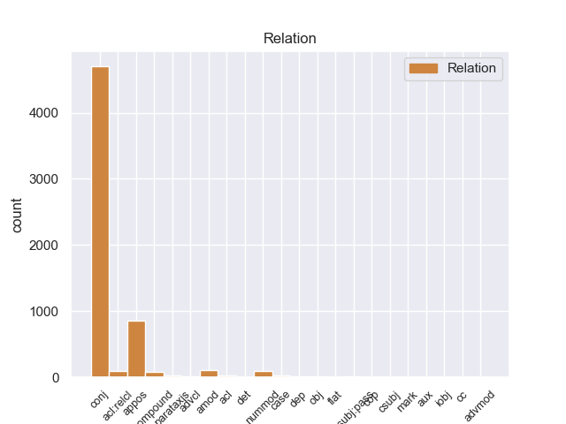
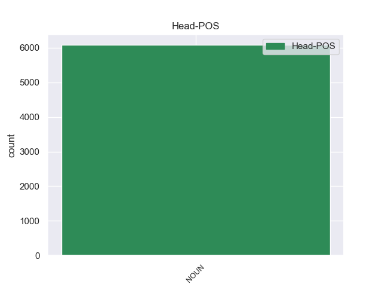
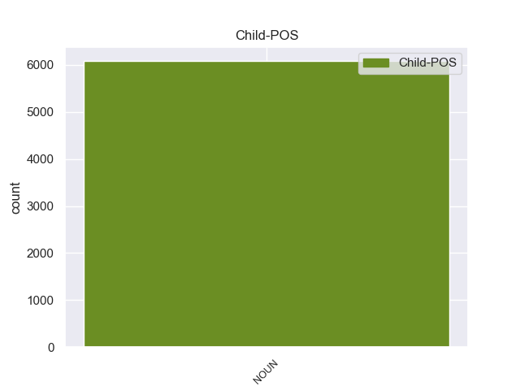

Distribution of features within this leaf



Agreement Rules sorted by frequency.
- When the dependent token is the conjunct(conj) of the head token, and the head token is NOUN and the dependent token is NOUN.
1 Esta _ _ _ _ 0 _ _ _
2 teoría _ _ _ _ 0 _ _ _
3 se _ _ _ _ 0 _ _ _
4 avenía _ _ _ _ 0 _ _ _
5 bien _ _ _ _ 0 _ _ _
6 con _ _ _ _ 0 _ _ _
7 la _ _ _ _ 0 _ _ _
8 creencia _ _ _ _ 0 _ _ _
9 de _ _ _ _ 0 _ _ _
10 el _ _ _ _ 0 _ _ _
11 Romanticismo _ _ _ _ 0 _ _ _
12 en _ _ _ _ 0 _ _ _
13 un _ _ _ _ 0 _ _ _
14 volkgeist _ _ _ _ 0 _ _ _
15 , _ _ _ _ 0 _ _ _
16 " _ _ _ _ 0 _ _ _
17 genio genio NOUN _ Gender=Masc|Number=Sing 0 _ _ _
18 o _ _ _ _ 0 _ _ _
19 espíritu espíritu NOUN _ Gender=Masc|Number=Sing 17 conj _ _
20 de _ _ _ _ 0 _ _ _
21 el _ _ _ _ 0 _ _ _
22 pueblo _ _ _ _ 0 _ _ _
23 " _ _ _ _ 0 _ _ _
24 , _ _ _ _ 0 _ _ _
25 autor _ _ _ _ 0 _ _ _
26 colectivo _ _ _ _ 0 _ _ _
27 y _ _ _ _ 0 _ _ _
28 anónimo _ _ _ _ 0 _ _ _
29 de _ _ _ _ 0 _ _ _
30 una _ _ _ _ 0 _ _ _
31 poesía _ _ _ _ 0 _ _ _
32 nacional _ _ _ _ 0 _ _ _
33 . _ _ _ _ 0 _ _ _
1 Con _ _ _ _ 0 _ _ _
2 miras _ _ _ _ 0 _ _ _
3 a _ _ _ _ 0 _ _ _
4 minimizar _ _ _ _ 0 _ _ _
5 cualquier _ _ _ _ 0 _ _ _
6 confusión _ _ _ _ 0 _ _ _
7 con _ _ _ _ 0 _ _ _
8 una _ _ _ _ 0 _ _ _
9 religión _ _ _ _ 0 _ _ _
10 , _ _ _ _ 0 _ _ _
11 el _ _ _ _ 0 _ _ _
12 uso _ _ _ _ 0 _ _ _
13 de _ _ _ _ 0 _ _ _
14 la _ _ _ _ 0 _ _ _
15 palabra palabra NOUN _ Gender=Fem|Number=Sing 0 _ _ _
16 " _ _ _ _ 0 _ _ _
17 templo templo NOUN _ Gender=Masc|Number=Sing 15 appos _ SpaceAfter=No
18 " _ _ _ _ 0 _ _ _
19 para _ _ _ _ 0 _ _ _
20 describir _ _ _ _ 0 _ _ _
21 los _ _ _ _ 0 _ _ _
22 inmuebles _ _ _ _ 0 _ _ _
23 de _ _ _ _ 0 _ _ _
24 los _ _ _ _ 0 _ _ _
25 Shriners _ _ _ _ 0 _ _ _
26 ha _ _ _ _ 0 _ _ _
27 sido _ _ _ _ 0 _ _ _
28 reemplazado _ _ _ _ 0 _ _ _
29 por _ _ _ _ 0 _ _ _
30 la _ _ _ _ 0 _ _ _
31 frase _ _ _ _ 0 _ _ _
32 " _ _ _ _ 0 _ _ _
33 Centro _ _ _ _ 0 _ _ _
34 Shriner _ _ _ _ 0 _ _ _
35 " _ _ _ _ 0 _ _ _
36 , _ _ _ _ 0 _ _ _
37 aunque _ _ _ _ 0 _ _ _
38 en _ _ _ _ 0 _ _ _
39 capítulos _ _ _ _ 0 _ _ _
40 individuales _ _ _ _ 0 _ _ _
41 siguen _ _ _ _ 0 _ _ _
42 siendo _ _ _ _ 0 _ _ _
43 nombrados _ _ _ _ 0 _ _ _
44 como _ _ _ _ 0 _ _ _
45 " _ _ _ _ 0 _ _ _
46 templos _ _ _ _ 0 _ _ _
47 " _ _ _ _ 0 _ _ _
48 . _ _ _ _ 0 _ _ _
1 En _ _ _ _ 0 _ _ _
2 el _ _ _ _ 0 _ _ _
3 caso _ _ _ _ 0 _ _ _
4 de _ _ _ _ 0 _ _ _
5 estrellas estrella NOUN _ Number=Plur 0 _ _ _
6 variables variable NOUN _ Number=Plur 5 amod _ _
7 regulares _ _ _ _ 0 _ _ _
8 , _ _ _ _ 0 _ _ _
9 puede _ _ _ _ 0 _ _ _
10 determinar _ _ _ _ 0 _ _ _
11 se _ _ _ _ 0 _ _ _
12 con _ _ _ _ 0 _ _ _
13 precisión _ _ _ _ 0 _ _ _
14 su _ _ _ _ 0 _ _ _
15 período _ _ _ _ 0 _ _ _
16 de _ _ _ _ 0 _ _ _
17 variabilidad _ _ _ _ 0 _ _ _
18 y _ _ _ _ 0 _ _ _
19 la _ _ _ _ 0 _ _ _
20 amplitud _ _ _ _ 0 _ _ _
21 de _ _ _ _ 0 _ _ _
22 el _ _ _ _ 0 _ _ _
23 mismo _ _ _ _ 0 _ _ _
24 . _ _ _ _ 0 _ _ _
1 Haya _ _ _ _ 0 _ _ _
2 es _ _ _ _ 0 _ _ _
3 un _ _ _ _ 0 _ _ _
4 género _ _ _ _ 0 _ _ _
5 de _ _ _ _ 0 _ _ _
6 dinosaurio _ _ _ _ 0 _ _ _
7 ornitisquio _ _ _ _ 0 _ _ _
8 ornitópodo _ _ _ _ 0 _ _ _
9 basal _ _ _ _ 0 _ _ _
10 que _ _ _ _ 0 _ _ _
11 vivió _ _ _ _ 0 _ _ _
12 a _ _ _ _ 0 _ _ _
13 finales _ _ _ _ 0 _ _ _
14 de _ _ _ _ 0 _ _ _
15 el _ _ _ _ 0 _ _ _
16 período _ _ _ _ 0 _ _ _
17 Cretácico _ _ _ _ 0 _ _ _
18 , _ _ _ _ 0 _ _ _
19 hace _ _ _ _ 0 _ _ _
20 aproximadamente _ _ _ _ 0 _ _ _
21 84 _ _ _ _ 0 _ _ _
22 millones millón NOUN _ Gender=Masc|Number=Plur 24 nummod _ _
23 de _ _ _ _ 0 _ _ _
24 años año NOUN _ Gender=Masc|Number=Plur 0 _ _ _
25 durante _ _ _ _ 0 _ _ _
26 el _ _ _ _ 0 _ _ _
27 Santoniano _ _ _ _ 0 _ _ _
28 , _ _ _ _ 0 _ _ _
29 en _ _ _ _ 0 _ _ _
30 lo _ _ _ _ 0 _ _ _
31 que _ _ _ _ 0 _ _ _
32 hoy _ _ _ _ 0 _ _ _
33 Asia _ _ _ _ 0 _ _ _
34 . _ _ _ _ 0 _ _ _
1 La _ _ _ _ 0 _ _ _
2 operación operación NOUN _ Gender=Fem|Number=Sing 0 _ _ _
3 salida salida NOUN _ Gender=Fem|Number=Sing|VerbForm=Part 2 compound _ _
4 de _ _ _ _ 0 _ _ _
5 el _ _ _ _ 0 _ _ _
6 FC _ _ _ _ 0 _ _ _
7 Barcelona _ _ _ _ 0 _ _ _
8 para _ _ _ _ 0 _ _ _
9 la _ _ _ _ 0 _ _ _
10 temporada _ _ _ _ 0 _ _ _
11 2011 _ _ _ _ 0 _ _ _
12 / _ _ _ _ 0 _ _ _
13 2012 _ _ _ _ 0 _ _ _
14 va _ _ _ _ 0 _ _ _
15 cogiendo _ _ _ _ 0 _ _ _
16 forma _ _ _ _ 0 _ _ _
17 y _ _ _ _ 0 _ _ _
18 ya _ _ _ _ 0 _ _ _
19 han _ _ _ _ 0 _ _ _
20 dado _ _ _ _ 0 _ _ _
21 oficialmente _ _ _ _ 0 _ _ _
22 las _ _ _ _ 0 _ _ _
23 bajas _ _ _ _ 0 _ _ _
24 que _ _ _ _ 0 _ _ _
25 irán _ _ _ _ 0 _ _ _
26 acoplando _ _ _ _ 0 _ _ _
27 se _ _ _ _ 0 _ _ _
28 a _ _ _ _ 0 _ _ _
29 otros _ _ _ _ 0 _ _ _
30 clubes _ _ _ _ 0 _ _ _
31 y _ _ _ _ 0 _ _ _
32 de _ _ _ _ 0 _ _ _
33 el _ _ _ _ 0 _ _ _
34 Barça _ _ _ _ 0 _ _ _
35 B _ _ _ _ 0 _ _ _
36 saldrán _ _ _ _ 0 _ _ _
37 varios _ _ _ _ 0 _ _ _
38 futbolistas _ _ _ _ 0 _ _ _
39 que _ _ _ _ 0 _ _ _
40 no _ _ _ _ 0 _ _ _
41 tienen _ _ _ _ 0 _ _ _
42 sitio _ _ _ _ 0 _ _ _
43 en _ _ _ _ 0 _ _ _
44 el _ _ _ _ 0 _ _ _
45 segundo _ _ _ _ 0 _ _ _
46 equipo _ _ _ _ 0 _ _ _
47 tras _ _ _ _ 0 _ _ _
48 dar _ _ _ _ 0 _ _ _
49 el _ _ _ _ 0 _ _ _
50 salto _ _ _ _ 0 _ _ _
51 a _ _ _ _ 0 _ _ _
52 algún _ _ _ _ 0 _ _ _
53 grande _ _ _ _ 0 _ _ _
54 , _ _ _ _ 0 _ _ _
55 entre _ _ _ _ 0 _ _ _
56 ellos _ _ _ _ 0 _ _ _
57 el _ _ _ _ 0 _ _ _
58 Betis _ _ _ _ 0 _ _ _
59 , _ _ _ _ 0 _ _ _
60 Sevilla _ _ _ _ 0 _ _ _
61 y _ _ _ _ 0 _ _ _
62 otros _ _ _ _ 0 _ _ _
63 más _ _ _ _ 0 _ _ _
64 de _ _ _ _ 0 _ _ _
65 la _ _ _ _ 0 _ _ _
66 primera _ _ _ _ 0 _ _ _
67 división _ _ _ _ 0 _ _ _
68 . _ _ _ _ 0 _ _ _
1 Más _ _ _ _ 0 _ _ _
2 tarde _ _ _ _ 0 _ _ _
3 en _ _ _ _ 0 _ _ _
4 1960 _ _ _ _ 0 _ _ _
5 , _ _ _ _ 0 _ _ _
6 The _ _ _ _ 0 _ _ _
7 Boss _ _ _ _ 0 _ _ _
8 fue _ _ _ _ 0 _ _ _
9 enviada _ _ _ _ 0 _ _ _
10 a _ _ _ _ 0 _ _ _
11 el _ _ _ _ 0 _ _ _
12 espacio _ _ _ _ 0 _ _ _
13 en _ _ _ _ 0 _ _ _
14 una _ _ _ _ 0 _ _ _
15 misión misión NOUN _ Gender=Fem|Number=Sing 0 _ _ _
16 cuyo _ _ _ _ 0 _ _ _
17 propósito propósito NOUN _ Gender=Masc|Number=Sing 15 acl:relcl _ _
18 era _ _ _ _ 0 _ _ _
19 estudiar _ _ _ _ 0 _ _ _
20 como _ _ _ _ 0 _ _ _
21 el _ _ _ _ 0 _ _ _
22 cuerpo _ _ _ _ 0 _ _ _
23 humano _ _ _ _ 0 _ _ _
24 se _ _ _ _ 0 _ _ _
25 adaptaba _ _ _ _ 0 _ _ _
26 a _ _ _ _ 0 _ _ _
27 las _ _ _ _ 0 _ _ _
28 condiciones _ _ _ _ 0 _ _ _
29 extremas _ _ _ _ 0 _ _ _
30 . _ _ _ _ 0 _ _ _
1 A _ _ _ _ 0 _ _ _
2 continuación _ _ _ _ 0 _ _ _
3 , _ _ _ _ 0 _ _ _
4 sonarán _ _ _ _ 0 _ _ _
5 los _ _ _ _ 0 _ _ _
6 ritmos _ _ _ _ 0 _ _ _
7 más _ _ _ _ 0 _ _ _
8 intensos _ _ _ _ 0 _ _ _
9 de _ _ _ _ 0 _ _ _
10 los _ _ _ _ 0 _ _ _
11 llanos _ _ _ _ 0 _ _ _
12 interpretados _ _ _ _ 0 _ _ _
13 por _ _ _ _ 0 _ _ _
14 una _ _ _ _ 0 _ _ _
15 agrupación _ _ _ _ 0 _ _ _
16 que _ _ _ _ 0 _ _ _
17 romperá _ _ _ _ 0 _ _ _
18 esquemas _ _ _ _ 0 _ _ _
19 : _ _ _ _ 0 _ _ _
20 el _ _ _ _ 0 _ _ _
21 Ensamble _ _ _ _ 0 _ _ _
22 de _ _ _ _ 0 _ _ _
23 Arpas _ _ _ _ 0 _ _ _
24 de _ _ _ _ 0 _ _ _
25 la _ _ _ _ 0 _ _ _
26 Orquesta _ _ _ _ 0 _ _ _
27 de _ _ _ _ 0 _ _ _
28 Música _ _ _ _ 0 _ _ _
29 Popular _ _ _ _ 0 _ _ _
30 de _ _ _ _ 0 _ _ _
31 el _ _ _ _ 0 _ _ _
32 Estado _ _ _ _ 0 _ _ _
33 Guárico _ _ _ _ 0 _ _ _
34 , _ _ _ _ 0 _ _ _
35 integrado _ _ _ _ 0 _ _ _
36 por _ _ _ _ 0 _ _ _
37 14 _ _ _ _ 0 _ _ _
38 ejecutantes ejecutante NOUN _ Number=Plur 0 _ _ _
39 , _ _ _ _ 0 _ _ _
40 todos _ _ _ _ 0 _ _ _
41 formados _ _ _ _ 0 _ _ _
42 por _ _ _ _ 0 _ _ _
43 El _ _ _ _ 0 _ _ _
44 Sistema _ _ _ _ 0 _ _ _
45 , _ _ _ _ 0 _ _ _
46 siendo _ _ _ _ 0 _ _ _
47 algunos _ _ _ _ 0 _ _ _
48 de _ _ _ _ 0 _ _ _
49 ellos _ _ _ _ 0 _ _ _
50 ganadores ganador NOUN _ Gender=Masc|Number=Plur 38 acl _ _
51 de _ _ _ _ 0 _ _ _
52 el _ _ _ _ 0 _ _ _
53 reconocido _ _ _ _ 0 _ _ _
54 Festival _ _ _ _ 0 _ _ _
55 Internacional _ _ _ _ 0 _ _ _
56 de _ _ _ _ 0 _ _ _
57 Arpas _ _ _ _ 0 _ _ _
58 Infantil _ _ _ _ 0 _ _ _
59 y _ _ _ _ 0 _ _ _
60 Adultos _ _ _ _ 0 _ _ _
61 de _ _ _ _ 0 _ _ _
62 Villavicencio _ _ _ _ 0 _ _ _
63 , _ _ _ _ 0 _ _ _
64 Colombia _ _ _ _ 0 _ _ _
65 . _ _ _ _ 0 _ _ _
1 La _ _ _ _ 0 _ _ _
2 diferencia diferencia NOUN _ Gender=Fem|Number=Sing 0 _ _ _
3 es _ _ _ _ 0 _ _ _
4 que _ _ _ _ 0 _ _ _
5 en _ _ _ _ 0 _ _ _
6 tanto _ _ _ _ 0 _ _ _
7 se _ _ _ _ 0 _ _ _
8 supone _ _ _ _ 0 _ _ _
9 que _ _ _ _ 0 _ _ _
10 las _ _ _ _ 0 _ _ _
11 pulgas _ _ _ _ 0 _ _ _
12 en _ _ _ _ 0 _ _ _
13 The _ _ _ _ 0 _ _ _
14 Professor _ _ _ _ 0 _ _ _
15 son _ _ _ _ 0 _ _ _
16 reales _ _ _ _ 0 _ _ _
17 , _ _ _ _ 0 _ _ _
18 en _ _ _ _ 0 _ _ _
19 Candilejas _ _ _ _ 0 _ _ _
20 son _ _ _ _ 0 _ _ _
21 solamente _ _ _ _ 0 _ _ _
22 parte parte NOUN _ Gender=Fem|Number=Sing 2 parataxis _ _
23 de _ _ _ _ 0 _ _ _
24 el _ _ _ _ 0 _ _ _
25 acto _ _ _ _ 0 _ _ _
26 ; _ _ _ _ 0 _ _ _
1 Como _ _ _ _ 0 _ _ _
2 tal _ _ _ _ 0 _ _ _
3 , _ _ _ _ 0 _ _ _
4 induce _ _ _ _ 0 _ _ _
5 , _ _ _ _ 0 _ _ _
6 plantea _ _ _ _ 0 _ _ _
7 e _ _ _ _ 0 _ _ _
8 impulsa _ _ _ _ 0 _ _ _
9 a _ _ _ _ 0 _ _ _
10 que _ _ _ _ 0 _ _ _
11 el _ _ _ _ 0 _ _ _
12 estudiante _ _ _ _ 0 _ _ _
13 amplíe _ _ _ _ 0 _ _ _
14 la _ _ _ _ 0 _ _ _
15 práctica _ _ _ _ 0 _ _ _
16 de _ _ _ _ 0 _ _ _
17 los _ _ _ _ 0 _ _ _
18 trabajos _ _ _ _ 0 _ _ _
19 , _ _ _ _ 0 _ _ _
20 merced merced NOUN _ Gender=Masc|Number=Sing 23 case _ _
21 a _ _ _ _ 0 _ _ _
22 la _ _ _ _ 0 _ _ _
23 presentación presentación NOUN _ Gender=Fem|Number=Sing 0 _ _ _
24 de _ _ _ _ 0 _ _ _
25 modelos _ _ _ _ 0 _ _ _
26 básicos _ _ _ _ 0 _ _ _
27 de _ _ _ _ 0 _ _ _
28 el _ _ _ _ 0 _ _ _
29 dibujo _ _ _ _ 0 _ _ _
30 . _ _ _ _ 0 _ _ _
1 Hace _ _ _ _ 0 _ _ _
2 aproximadamente _ _ _ _ 0 _ _ _
3 un _ _ _ _ 0 _ _ _
4 año _ _ _ _ 0 _ _ _
5 que _ _ _ _ 0 _ _ _
6 Niscayah _ _ _ _ 0 _ _ _
7 decidió _ _ _ _ 0 _ _ _
8 realizar _ _ _ _ 0 _ _ _
9 un _ _ _ _ 0 _ _ _
10 cambio _ _ _ _ 0 _ _ _
11 estratégico _ _ _ _ 0 _ _ _
12 para _ _ _ _ 0 _ _ _
13 convertir _ _ _ _ 0 _ _ _
14 a _ _ _ _ 0 _ _ _
15 el _ _ _ _ 0 _ _ _
16 cliente _ _ _ _ 0 _ _ _
17 en _ _ _ _ 0 _ _ _
18 su _ _ _ _ 0 _ _ _
19 núcleo _ _ _ _ 0 _ _ _
20 y _ _ _ _ 0 _ _ _
21 , _ _ _ _ 0 _ _ _
22 consecuencia consecuencia NOUN _ Gender=Fem|Number=Sing 27 dep _ _
23 de _ _ _ _ 0 _ _ _
24 éste _ _ _ _ 0 _ _ _
25 , _ _ _ _ 0 _ _ _
26 un _ _ _ _ 0 _ _ _
27 cambio cambio NOUN _ Gender=Masc|Number=Sing 0 _ _ _
28 de _ _ _ _ 0 _ _ _
29 estructura _ _ _ _ 0 _ _ _
30 , _ _ _ _ 0 _ _ _
31 pasando _ _ _ _ 0 _ _ _
32 de _ _ _ _ 0 _ _ _
33 una _ _ _ _ 0 _ _ _
34 división _ _ _ _ 0 _ _ _
35 funcional _ _ _ _ 0 _ _ _
36 a _ _ _ _ 0 _ _ _
37 una _ _ _ _ 0 _ _ _
38 matricial _ _ _ _ 0 _ _ _
39 . _ _ _ _ 0 _ _ _
1 Sin _ _ _ _ 0 _ _ _
2 embargo _ _ _ _ 0 _ _ _
3 , _ _ _ _ 0 _ _ _
4 el _ _ _ _ 0 _ _ _
5 capitán capitán NOUN _ Gender=Masc|Number=Sing 9 nsubj:pass _ _
6 Willis _ _ _ _ 0 _ _ _
7 fue _ _ _ _ 0 _ _ _
8 nombrado _ _ _ _ 0 _ _ _
9 sheriff sheriff NOUN _ Gender=Masc|Number=Sing 0 _ _ _
10 y _ _ _ _ 0 _ _ _
11 enviado _ _ _ _ 0 _ _ _
12 a _ _ _ _ 0 _ _ _
13 Fermanagh _ _ _ _ 0 _ _ _
14 a _ _ _ _ 0 _ _ _
15 el _ _ _ _ 0 _ _ _
16 frente _ _ _ _ 0 _ _ _
17 de _ _ _ _ 0 _ _ _
18 un _ _ _ _ 0 _ _ _
19 grupo _ _ _ _ 0 _ _ _
20 de _ _ _ _ 0 _ _ _
21 cien _ _ _ _ 0 _ _ _
22 hombres _ _ _ _ 0 _ _ _
23 . _ _ _ _ 0 _ _ _
1 Se _ _ _ _ 0 _ _ _
2 denomina _ _ _ _ 0 _ _ _
3 economía economía NOUN _ Gender=Fem|Number=Sing 0 _ _ _
4 informal _ _ _ _ 0 _ _ _
5 a _ _ _ _ 0 _ _ _
6 la _ _ _ _ 0 _ _ _
7 actividad actividad NOUN _ Gender=Fem|Number=Sing 3 obj _ _
8 económica _ _ _ _ 0 _ _ _
9 oculta _ _ _ _ 0 _ _ _
10 , _ _ _ _ 0 _ _ _
11 solo _ _ _ _ 0 _ _ _
12 por _ _ _ _ 0 _ _ _
13 razones _ _ _ _ 0 _ _ _
14 de _ _ _ _ 0 _ _ _
15 elusión _ _ _ _ 0 _ _ _
16 fiscal _ _ _ _ 0 _ _ _
17 o _ _ _ _ 0 _ _ _
18 de _ _ _ _ 0 _ _ _
19 control _ _ _ _ 0 _ _ _
20 meramente _ _ _ _ 0 _ _ _
21 administrativo _ _ _ _ 0 _ _ _
22 ( _ _ _ _ 0 _ _ _
23 por _ _ _ _ 0 _ _ _
24 ejemplo _ _ _ _ 0 _ _ _
25 , _ _ _ _ 0 _ _ _
26 el _ _ _ _ 0 _ _ _
27 trabajo _ _ _ _ 0 _ _ _
28 doméstico _ _ _ _ 0 _ _ _
29 no _ _ _ _ 0 _ _ _
30 declarado _ _ _ _ 0 _ _ _
31 , _ _ _ _ 0 _ _ _
32 la _ _ _ _ 0 _ _ _
33 venta _ _ _ _ 0 _ _ _
34 ambulante _ _ _ _ 0 _ _ _
35 espontánea _ _ _ _ 0 _ _ _
36 o _ _ _ _ 0 _ _ _
37 la _ _ _ _ 0 _ _ _
38 infravaloración _ _ _ _ 0 _ _ _
39 de _ _ _ _ 0 _ _ _
40 el _ _ _ _ 0 _ _ _
41 precio _ _ _ _ 0 _ _ _
42 escriturado _ _ _ _ 0 _ _ _
43 en _ _ _ _ 0 _ _ _
44 una _ _ _ _ 0 _ _ _
45 compraventa _ _ _ _ 0 _ _ _
46 inmobiliaria _ _ _ _ 0 _ _ _
47 ) _ _ _ _ 0 _ _ _
48 . _ _ _ _ 0 _ _ _
1 No _ _ _ _ 0 _ _ _
2 tener _ _ _ _ 0 _ _ _
3 oficina _ _ _ _ 0 _ _ _
4 en _ _ _ _ 0 _ _ _
5 el _ _ _ _ 0 _ _ _
6 propio _ _ _ _ 0 _ _ _
7 aeropuerto _ _ _ _ 0 _ _ _
8 es _ _ _ _ 0 _ _ _
9 un _ _ _ _ 0 _ _ _
10 inconveniente inconveniente NOUN _ Number=Sing 0 _ _ _
11 , _ _ _ _ 0 _ _ _
12 sobre _ _ _ _ 0 _ _ _
13 todo _ _ _ _ 0 _ _ _
14 si _ _ _ _ 0 _ _ _
15 vienes _ _ _ _ 0 _ _ _
16 de _ _ _ _ 0 _ _ _
17 lejos _ _ _ _ 0 _ _ _
18 y _ _ _ _ 0 _ _ _
19 viajas _ _ _ _ 0 _ _ _
20 con _ _ _ _ 0 _ _ _
21 niños _ _ _ _ 0 _ _ _
22 , _ _ _ _ 0 _ _ _
23 que _ _ _ _ 0 _ _ _
24 lo _ _ _ _ 0 _ _ _
25 único único NOUN _ Gender=Masc|Number=Sing 10 advcl _ _
26 que _ _ _ _ 0 _ _ _
27 esperas _ _ _ _ 0 _ _ _
28 es _ _ _ _ 0 _ _ _
29 que _ _ _ _ 0 _ _ _
30 te _ _ _ _ 0 _ _ _
31 den _ _ _ _ 0 _ _ _
32 el _ _ _ _ 0 _ _ _
33 coche _ _ _ _ 0 _ _ _
34 rápidamente _ _ _ _ 0 _ _ _
35 e _ _ _ _ 0 _ _ _
36 ir _ _ _ _ 0 _ _ _
37 te _ _ _ _ 0 _ _ _
38 a _ _ _ _ 0 _ _ _
39 tu _ _ _ _ 0 _ _ _
40 destino _ _ _ _ 0 _ _ _
41 . _ _ _ _ 0 _ _ _
1 Kolker _ _ _ _ 0 _ _ _
2 , _ _ _ _ 0 _ _ _
3 a _ _ _ _ 0 _ _ _
4 el _ _ _ _ 0 _ _ _
5 igual _ _ _ _ 0 _ _ _
6 que _ _ _ _ 0 _ _ _
7 compañeros compañero NOUN _ Gender=Masc|Number=Plur 0 _ _ _
8 actores actor NOUN _ Gender=Masc|Number=Plur 7 flat _ _
9 como _ _ _ _ 0 _ _ _
10 Richard _ _ _ _ 0 _ _ _
11 Bennett _ _ _ _ 0 _ _ _
12 y _ _ _ _ 0 _ _ _
13 Robert _ _ _ _ 0 _ _ _
14 Warwick _ _ _ _ 0 _ _ _
15 , _ _ _ _ 0 _ _ _
16 tenía _ _ _ _ 0 _ _ _
17 una _ _ _ _ 0 _ _ _
18 sólida _ _ _ _ 0 _ _ _
19 carrera _ _ _ _ 0 _ _ _
20 teatral _ _ _ _ 0 _ _ _
21 antes _ _ _ _ 0 _ _ _
22 de _ _ _ _ 0 _ _ _
23 dedicar _ _ _ _ 0 _ _ _
24 se _ _ _ _ 0 _ _ _
25 a _ _ _ _ 0 _ _ _
26 el _ _ _ _ 0 _ _ _
27 cine _ _ _ _ 0 _ _ _
28 mudo _ _ _ _ 0 _ _ _
29 . _ _ _ _ 0 _ _ _
1 El _ _ _ _ 0 _ _ _
2 resultado _ _ _ _ 0 _ _ _
3 final _ _ _ _ 0 _ _ _
4 de _ _ _ _ 0 _ _ _
5 la _ _ _ _ 0 _ _ _
6 represión _ _ _ _ 0 _ _ _
7 por _ _ _ _ 0 _ _ _
8 la _ _ _ _ 0 _ _ _
9 muerte _ _ _ _ 0 _ _ _
10 de _ _ _ _ 0 _ _ _
11 Heydrich _ _ _ _ 0 _ _ _
12 fue _ _ _ _ 0 _ _ _
13 de _ _ _ _ 0 _ _ _
14 1.300 _ _ _ _ 0 _ _ _
15 personas _ _ _ _ 0 _ _ _
16 , _ _ _ _ 0 _ _ _
17 entre _ _ _ _ 0 _ _ _
18 partisanos partisano NOUN _ Gender=Masc|Number=Plur 21 cop _ SpaceAfter=No
19 , _ _ _ _ 0 _ _ _
20 altos _ _ _ _ 0 _ _ _
21 dirigentes dirigente NOUN _ Number=Plur 0 _ _ _
22 checos _ _ _ _ 0 _ _ _
23 y _ _ _ _ 0 _ _ _
24 víctimas _ _ _ _ 0 _ _ _
25 circunstanciales _ _ _ _ 0 _ _ _
26 , _ _ _ _ 0 _ _ _
27 como _ _ _ _ 0 _ _ _
28 los _ _ _ _ 0 _ _ _
29 habitantes _ _ _ _ 0 _ _ _
30 de _ _ _ _ 0 _ _ _
31 Lídice _ _ _ _ 0 _ _ _
32 . _ _ _ _ 0 _ _ _
1 Permaneció _ _ _ _ 0 _ _ _
2 allí _ _ _ _ 0 _ _ _
3 algún _ _ _ _ 0 _ _ _
4 tiempo _ _ _ _ 0 _ _ _
5 , _ _ _ _ 0 _ _ _
6 pero _ _ _ _ 0 _ _ _
7 , _ _ _ _ 0 _ _ _
8 ante _ _ _ _ 0 _ _ _
9 la _ _ _ _ 0 _ _ _
10 posibilidad _ _ _ _ 0 _ _ _
11 de _ _ _ _ 0 _ _ _
12 que _ _ _ _ 0 _ _ _
13 actos acto NOUN _ Gender=Masc|Number=Plur 14 det _ _
14 suyos suyo NOUN _ Gender=Masc|Number=Plur 0 _ _ _
15 fueran _ _ _ _ 0 _ _ _
16 mal _ _ _ _ 0 _ _ _
17 interpretados _ _ _ _ 0 _ _ _
18 , _ _ _ _ 0 _ _ _
19 solicitó _ _ _ _ 0 _ _ _
20 su _ _ _ _ 0 _ _ _
21 traslado _ _ _ _ 0 _ _ _
22 a _ _ _ _ 0 _ _ _
23 su _ _ _ _ 0 _ _ _
24 pueblo _ _ _ _ 0 _ _ _
25 natal _ _ _ _ 0 _ _ _
26 Arroyos _ _ _ _ 0 _ _ _
27 y _ _ _ _ 0 _ _ _
28 Esteros _ _ _ _ 0 _ _ _
29 . _ _ _ _ 0 _ _ _
1 No _ _ _ _ 0 _ _ _
2 era _ _ _ _ 0 _ _ _
3 mi _ _ _ _ 0 _ _ _
4 intención intención NOUN _ Gender=Fem|Number=Sing 0 _ _ _
5 ser _ _ _ _ 0 _ _ _
6 una _ _ _ _ 0 _ _ _
7 leyenda leyenda NOUN _ Gender=Fem|Number=Sing 4 csubj _ SpaceAfter=No
8 , _ _ _ _ 0 _ _ _
9 pero _ _ _ _ 0 _ _ _
10 no _ _ _ _ 0 _ _ _
11 suena _ _ _ _ 0 _ _ _
12 nada _ _ _ _ 0 _ _ _
13 mal _ _ _ _ 0 _ _ _
14 . _ _ _ _ 0 _ _ _
1 Dios _ _ _ _ 0 _ _ _
2 me _ _ _ _ 0 _ _ _
3 ha _ _ _ _ 0 _ _ _
4 excluido _ _ _ _ 0 _ _ _
5 de _ _ _ _ 0 _ _ _
6 la _ _ _ _ 0 _ _ _
7 vida _ _ _ _ 0 _ _ _
8 de _ _ _ _ 0 _ _ _
9 actividad _ _ _ _ 0 _ _ _
10 incesante _ _ _ _ 0 _ _ _
11 en _ _ _ _ 0 _ _ _
12 que _ _ _ _ 0 _ _ _
13 yo _ _ _ _ 0 _ _ _
14 me _ _ _ _ 0 _ _ _
15 encontraba _ _ _ _ 0 _ _ _
16 en _ _ _ _ 0 _ _ _
17 los _ _ _ _ 0 _ _ _
18 años _ _ _ _ 0 _ _ _
19 anteriores _ _ _ _ 0 _ _ _
20 , _ _ _ _ 0 _ _ _
21 y _ _ _ _ 0 _ _ _
22 me _ _ _ _ 0 _ _ _
23 ha _ _ _ _ 0 _ _ _
24 encerrado _ _ _ _ 0 _ _ _
25 en _ _ _ _ 0 _ _ _
26 una _ _ _ _ 0 _ _ _
27 mayor _ _ _ _ 0 _ _ _
28 quietud _ _ _ _ 0 _ _ _
29 , _ _ _ _ 0 _ _ _
30 en _ _ _ _ 0 _ _ _
31 la _ _ _ _ 0 _ _ _
32 que _ _ _ _ 0 _ _ _
33 puedo _ _ _ _ 0 _ _ _
34 dedicar _ _ _ _ 0 _ _ _
35 le _ _ _ _ 0 _ _ _
36 más _ _ _ _ 0 _ _ _
37 tiempo _ _ _ _ 0 _ _ _
38 a _ _ _ _ 0 _ _ _
39 la _ _ _ _ 0 _ _ _
40 meditación meditación NOUN _ Gender=Fem|Number=Sing 0 _ _ _
41 y _ _ _ _ 0 _ _ _
42 a _ _ _ _ 0 _ _ _
43 la _ _ _ _ 0 _ _ _
44 oración oración NOUN _ Gender=Fem|Number=Sing 40 iobj _ SpaceAfter=No
45 . _ _ _ _ 0 _ _ _
1 Por _ _ _ _ 0 _ _ _
2 muchos _ _ _ _ 0 _ _ _
3 el _ _ _ _ 0 _ _ _
4 ser _ _ _ _ 0 _ _ _
5 invitado _ _ _ _ 0 _ _ _
6 a _ _ _ _ 0 _ _ _
7 Kohaku _ _ _ _ 0 _ _ _
8 es _ _ _ _ 0 _ _ _
9 el _ _ _ _ 0 _ _ _
10 saber saber NOUN _ Gender=Masc|Number=Sing 0 _ _ _
11 que _ _ _ _ 0 _ _ _
12 ya _ _ _ _ 0 _ _ _
13 eres _ _ _ _ 0 _ _ _
14 un _ _ _ _ 0 _ _ _
15 artista artista NOUN _ Number=Sing 10 mark _ _
16 de _ _ _ _ 0 _ _ _
17 renombre _ _ _ _ 0 _ _ _
18 en _ _ _ _ 0 _ _ _
19 Japón _ _ _ _ 0 _ _ _
20 . _ _ _ _ 0 _ _ _
1 La _ _ _ _ 0 _ _ _
2 actividad _ _ _ _ 0 _ _ _
3 económica _ _ _ _ 0 _ _ _
4 tradicional _ _ _ _ 0 _ _ _
5 es _ _ _ _ 0 _ _ _
6 la _ _ _ _ 0 _ _ _
7 de _ _ _ _ 0 _ _ _
8 la _ _ _ _ 0 _ _ _
9 ganadería ganadería NOUN _ Gender=Fem|Number=Sing 0 _ _ _
10 , _ _ _ _ 0 _ _ _
11 especialmente _ _ _ _ 0 _ _ _
12 la _ _ _ _ 0 _ _ _
13 bovina bovino NOUN _ Gender=Fem|Number=Sing 9 aux _ SpaceAfter=No
14 , _ _ _ _ 0 _ _ _
15 aunque _ _ _ _ 0 _ _ _
16 existiendo _ _ _ _ 0 _ _ _
17 marginalmente _ _ _ _ 0 _ _ _
18 otros _ _ _ _ 0 _ _ _
19 tipos _ _ _ _ 0 _ _ _
20 . _ _ _ _ 0 _ _ _
Disagree Examples:
1 Producto _ _ _ _ 0 _ _ _
2 de _ _ _ _ 0 _ _ _
3 el _ _ _ _ 0 _ _ _
4 fin _ _ _ _ 0 _ _ _
5 de _ _ _ _ 0 _ _ _
6 el _ _ _ _ 0 _ _ _
7 imperio imperio NOUN _ Gender=Masc|Number=Sing 0 _ _ _
8 y _ _ _ _ 0 _ _ _
9 las _ _ _ _ 0 _ _ _
10 invasiones invasión NOUN _ Gender=Fem|Number=Plur 7 conj _ _
11 germanas _ _ _ _ 0 _ _ _
12 la _ _ _ _ 0 _ _ _
13 población _ _ _ _ 0 _ _ _
14 isleña _ _ _ _ 0 _ _ _
15 cayó _ _ _ _ 0 _ _ _
16 a _ _ _ _ 0 _ _ _
17 1 _ _ _ _ 0 _ _ _
18 millón _ _ _ _ 0 _ _ _
19 durante _ _ _ _ 0 _ _ _
20 el _ _ _ _ 0 _ _ _
21 período _ _ _ _ 0 _ _ _
22 sajón _ _ _ _ 0 _ _ _
23 , _ _ _ _ 0 _ _ _
24 permaneciendo _ _ _ _ 0 _ _ _
25 hasta _ _ _ _ 0 _ _ _
26 el _ _ _ _ 0 _ _ _
27 siglo _ _ _ _ 0 _ _ _
28 XI _ _ _ _ 0 _ _ _
29 cuando _ _ _ _ 0 _ _ _
30 volvió _ _ _ _ 0 _ _ _
31 a _ _ _ _ 0 _ _ _
32 aumentar _ _ _ _ 0 _ _ _
33 llegando _ _ _ _ 0 _ _ _
34 a _ _ _ _ 0 _ _ _
35 5 _ _ _ _ 0 _ _ _
36 a _ _ _ _ 0 _ _ _
37 7 _ _ _ _ 0 _ _ _
38 millones _ _ _ _ 0 _ _ _
39 en _ _ _ _ 0 _ _ _
40 el _ _ _ _ 0 _ _ _
41 siglo _ _ _ _ 0 _ _ _
42 XV _ _ _ _ 0 _ _ _
43 , _ _ _ _ 0 _ _ _
44 pero _ _ _ _ 0 _ _ _
45 tras _ _ _ _ 0 _ _ _
46 la _ _ _ _ 0 _ _ _
47 peste _ _ _ _ 0 _ _ _
48 negra _ _ _ _ 0 _ _ _
49 volvió _ _ _ _ 0 _ _ _
50 a _ _ _ _ 0 _ _ _
51 reducir _ _ _ _ 0 _ _ _
52 se _ _ _ _ 0 _ _ _
53 a _ _ _ _ 0 _ _ _
54 solo _ _ _ _ 0 _ _ _
55 2 _ _ _ _ 0 _ _ _
56 a _ _ _ _ 0 _ _ _
57 4 _ _ _ _ 0 _ _ _
58 millones _ _ _ _ 0 _ _ _
59 . _ _ _ _ 0 _ _ _
1 Jaime _ _ _ _ 0 _ _ _
2 Lee _ _ _ _ 0 _ _ _
3 Curtis _ _ _ _ 0 _ _ _
4 debutaría _ _ _ _ 0 _ _ _
5 en _ _ _ _ 0 _ _ _
6 el _ _ _ _ 0 _ _ _
7 cine _ _ _ _ 0 _ _ _
8 con _ _ _ _ 0 _ _ _
9 veinte _ _ _ _ 0 _ _ _
10 años año NOUN _ Gender=Masc|Number=Plur 0 _ _ _
11 y _ _ _ _ 0 _ _ _
12 de _ _ _ _ 0 _ _ _
13 la _ _ _ _ 0 _ _ _
14 mano mano NOUN _ Gender=Fem|Number=Sing 10 conj _ _
15 de _ _ _ _ 0 _ _ _
16 John _ _ _ _ 0 _ _ _
17 Carpenter _ _ _ _ 0 _ _ _
18 , _ _ _ _ 0 _ _ _
19 con _ _ _ _ 0 _ _ _
20 la _ _ _ _ 0 _ _ _
21 cinta _ _ _ _ 0 _ _ _
22 de _ _ _ _ 0 _ _ _
23 terror _ _ _ _ 0 _ _ _
24 Halloween _ _ _ _ 0 _ _ _
25 ( _ _ _ _ 0 _ _ _
26 1978 _ _ _ _ 0 _ _ _
27 ) _ _ _ _ 0 _ _ _
28 . _ _ _ _ 0 _ _ _
1 El _ _ _ _ 0 _ _ _
2 níquel _ _ _ _ 0 _ _ _
3 incumple _ _ _ _ 0 _ _ _
4 el _ _ _ _ 0 _ _ _
5 plan _ _ _ _ 0 _ _ _
6 de _ _ _ _ 0 _ _ _
7 producción producción NOUN _ Gender=Fem|Number=Sing 0 _ _ _
8 y _ _ _ _ 0 _ _ _
9 de _ _ _ _ 0 _ _ _
10 exportaciones exportación NOUN _ Gender=Fem|Number=Plur 7 conj _ _
11 en _ _ _ _ 0 _ _ _
12 6 _ _ _ _ 0 _ _ _
13 mil _ _ _ _ 0 _ _ _
14 700 _ _ _ _ 0 _ _ _
15 toneladas _ _ _ _ 0 _ _ _
16 , _ _ _ _ 0 _ _ _
17 lo _ _ _ _ 0 _ _ _
18 que _ _ _ _ 0 _ _ _
19 significó _ _ _ _ 0 _ _ _
20 dejar _ _ _ _ 0 _ _ _
21 de _ _ _ _ 0 _ _ _
22 ingresar _ _ _ _ 0 _ _ _
23 unos _ _ _ _ 0 _ _ _
24 120 _ _ _ _ 0 _ _ _
25 millones _ _ _ _ 0 _ _ _
26 de _ _ _ _ 0 _ _ _
27 dólares _ _ _ _ 0 _ _ _
28 , _ _ _ _ 0 _ _ _
29 también _ _ _ _ 0 _ _ _
30 en _ _ _ _ 0 _ _ _
31 condiciones _ _ _ _ 0 _ _ _
32 de _ _ _ _ 0 _ _ _
33 una _ _ _ _ 0 _ _ _
34 coyuntura _ _ _ _ 0 _ _ _
35 de _ _ _ _ 0 _ _ _
36 precios _ _ _ _ 0 _ _ _
37 más _ _ _ _ 0 _ _ _
38 favorable _ _ _ _ 0 _ _ _
39 que _ _ _ _ 0 _ _ _
40 la _ _ _ _ 0 _ _ _
41 prevista _ _ _ _ 0 _ _ _
42 en _ _ _ _ 0 _ _ _
43 el _ _ _ _ 0 _ _ _
44 Plan _ _ _ _ 0 _ _ _
45 . _ _ _ _ 0 _ _ _
1 El _ _ _ _ 0 _ _ _
2 que _ _ _ _ 0 _ _ _
3 la _ _ _ _ 0 _ _ _
4 publicidad _ _ _ _ 0 _ _ _
5 sea _ _ _ _ 0 _ _ _
6 el _ _ _ _ 0 _ _ _
7 principal _ _ _ _ 0 _ _ _
8 ingreso _ _ _ _ 0 _ _ _
9 económico _ _ _ _ 0 _ _ _
10 de _ _ _ _ 0 _ _ _
11 los _ _ _ _ 0 _ _ _
12 medios _ _ _ _ 0 _ _ _
13 , _ _ _ _ 0 _ _ _
14 los _ _ _ _ 0 _ _ _
15 vincula _ _ _ _ 0 _ _ _
16 a _ _ _ _ 0 _ _ _
17 la _ _ _ _ 0 _ _ _
18 economía economía NOUN _ Gender=Fem|Number=Sing 0 _ _ _
19 general _ _ _ _ 0 _ _ _
20 y _ _ _ _ 0 _ _ _
21 a _ _ _ _ 0 _ _ _
22 los _ _ _ _ 0 _ _ _
23 puntos punto NOUN _ Gender=Masc|Number=Plur 18 conj _ _
24 de _ _ _ _ 0 _ _ _
25 vista _ _ _ _ 0 _ _ _
26 e _ _ _ _ 0 _ _ _
27 intereses _ _ _ _ 0 _ _ _
28 de _ _ _ _ 0 _ _ _
29 los _ _ _ _ 0 _ _ _
30 grandes _ _ _ _ 0 _ _ _
31 grupos _ _ _ _ 0 _ _ _
32 económicos _ _ _ _ 0 _ _ _
33 , _ _ _ _ 0 _ _ _
34 entre _ _ _ _ 0 _ _ _
35 los _ _ _ _ 0 _ _ _
36 que _ _ _ _ 0 _ _ _
37 también _ _ _ _ 0 _ _ _
38 están _ _ _ _ 0 _ _ _
39 los _ _ _ _ 0 _ _ _
40 mismos _ _ _ _ 0 _ _ _
41 grupos _ _ _ _ 0 _ _ _
42 de _ _ _ _ 0 _ _ _
43 comunicación _ _ _ _ 0 _ _ _
44 . _ _ _ _ 0 _ _ _
1 Algunos _ _ _ _ 0 _ _ _
2 de _ _ _ _ 0 _ _ _
3 los _ _ _ _ 0 _ _ _
4 principales _ _ _ _ 0 _ _ _
5 edificios _ _ _ _ 0 _ _ _
6 son _ _ _ _ 0 _ _ _
7 la _ _ _ _ 0 _ _ _
8 iglesia iglesia NOUN _ Gender=Fem|Number=Sing 0 _ _ _
9 de _ _ _ _ 0 _ _ _
10 el _ _ _ _ 0 _ _ _
11 Salvador _ _ _ _ 0 _ _ _
12 " _ _ _ _ 0 _ _ _
13 Na _ _ _ _ 0 _ _ _
14 Séniakh _ _ _ _ 0 _ _ _
15 " _ _ _ _ 0 _ _ _
16 ( _ _ _ _ 0 _ _ _
17 1675 _ _ _ _ 0 _ _ _
18 ) _ _ _ _ 0 _ _ _
19 , _ _ _ _ 0 _ _ _
20 la _ _ _ _ 0 _ _ _
21 iglesia _ _ _ _ 0 _ _ _
22 de _ _ _ _ 0 _ _ _
23 San _ _ _ _ 0 _ _ _
24 Gregorio _ _ _ _ 0 _ _ _
25 ( _ _ _ _ 0 _ _ _
26 1670 _ _ _ _ 0 _ _ _
27 ) _ _ _ _ 0 _ _ _
28 , _ _ _ _ 0 _ _ _
29 y _ _ _ _ 0 _ _ _
30 las _ _ _ _ 0 _ _ _
31 iglesias iglesia NOUN _ Gender=Fem|Number=Plur 8 conj _ _
32 barbicanas _ _ _ _ 0 _ _ _
33 de _ _ _ _ 0 _ _ _
34 San _ _ _ _ 0 _ _ _
35 Juan _ _ _ _ 0 _ _ _
36 el _ _ _ _ 0 _ _ _
37 Apóstol _ _ _ _ 0 _ _ _
38 ( _ _ _ _ 0 _ _ _
39 1683 _ _ _ _ 0 _ _ _
40 ) _ _ _ _ 0 _ _ _
41 y _ _ _ _ 0 _ _ _
42 de _ _ _ _ 0 _ _ _
43 la _ _ _ _ 0 _ _ _
44 Resurrección _ _ _ _ 0 _ _ _
45 de _ _ _ _ 0 _ _ _
46 Cristo _ _ _ _ 0 _ _ _
47 ( _ _ _ _ 0 _ _ _
48 1670 _ _ _ _ 0 _ _ _
49 ) _ _ _ _ 0 _ _ _
50 . _ _ _ _ 0 _ _ _